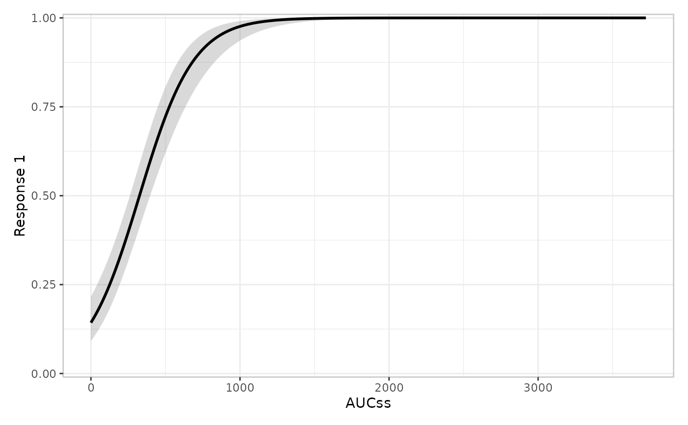
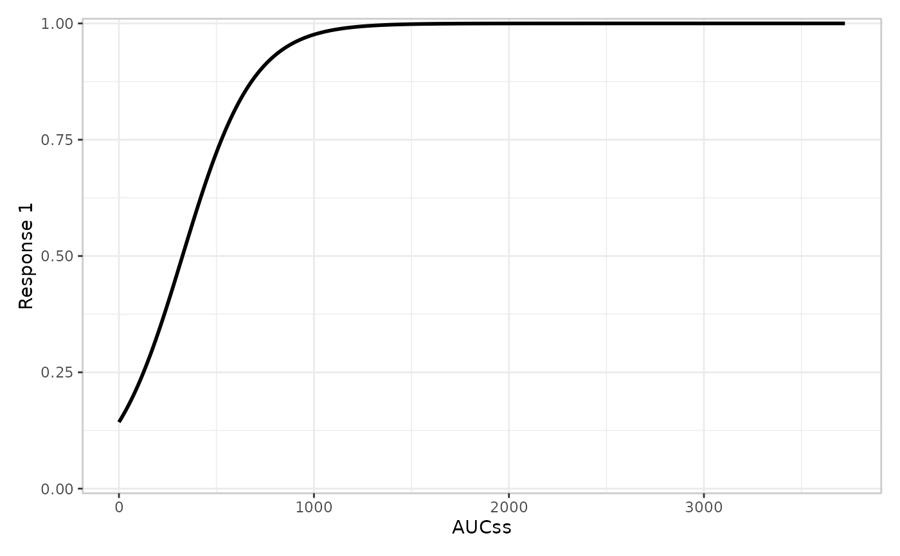
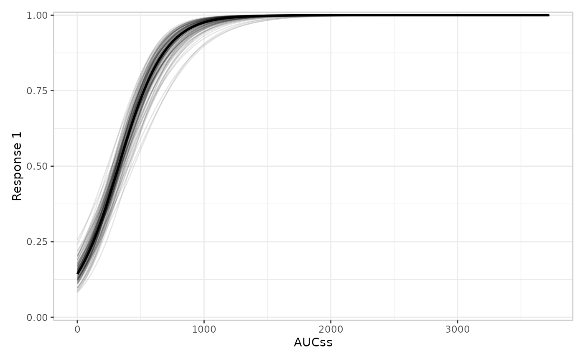
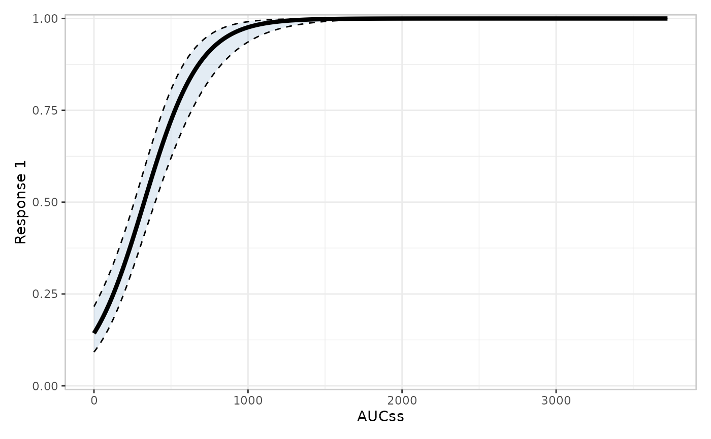
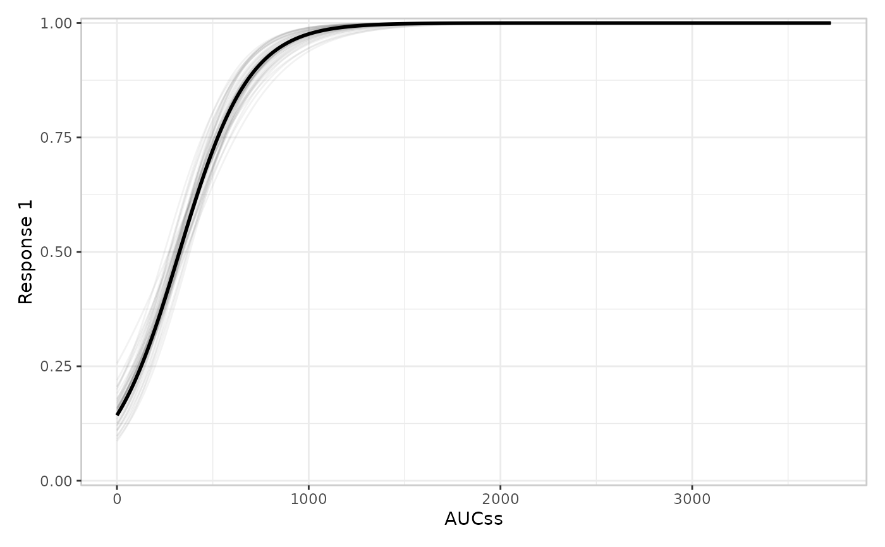

Builder functions for the model layer (er_plot_add_model()), drawing
the fitted exposure-response curve as a ribbon-and-line, a line alone, or a
spaghetti plot of simulated draws.
Usage
er_style_model_ribbonline(
data,
config,
stratify,
exposure,
response,
strata,
theme,
...,
ribbon_fill = "grey40",
ribbon_alpha = 0.25,
ribbon_edges = FALSE,
linewidth = 1
)
er_style_model_line(
data,
config,
stratify,
exposure,
response,
strata,
theme,
...,
linewidth = 1
)
er_style_model_spaghetti(
data,
config,
stratify,
exposure,
response,
strata,
theme,
...,
alpha = NULL,
linewidth = 1,
nsim = 100L
)Arguments
- data
The original data frame
- config
Configuration for the specific plot
- stratify
Logical indicating whether to stratify
- exposure
Exposure variable
- response
Response variable
- strata
Stratification variable
- theme
Theme components
- ...
Additional named arguments forwarded from
er_plot_add_model()'s own...; seeer_style()'s "Passing extra arguments to a builder" section.er_style_model_spaghetti()reads aseedfrom here (falling back toconfig$seed– currently alwaysNULLfor the model layer – when none is supplied) to pass toer_simulate(), letting a caller override erglm's auto-selected seed.- ribbon_fill
Fill colour for
er_style_model_ribbonline()'s ribbon. Only takes effect when the layer is unstratified – a stratified ribbon already mapsfillto the strata variable, so this argument is ignored in that case. Default"grey40".- ribbon_alpha
Transparency of
er_style_model_ribbonline()'s ribbon (0-1), stratified or not. Default0.25.- ribbon_edges
Whether
er_style_model_ribbonline()additionally draws a dashedggplot2::geom_path()along the ribbon's ownci_lower/ci_upperbounds, on top of the shaded ribbon fill. DefaultFALSE(ribbon fill only).- linewidth
Width of the fitted curve's line, for all three model builders (
er_style_model_ribbonline()/_line()'s single curve,er_style_model_spaghetti()'s mean curve drawn on top of the spaghetti draws). Default1.- alpha
Transparency of
er_style_model_spaghetti()'s individual simulated draws (0-1). Defaults toNULL, which uses0.1unstratified and0.25stratified. An explicit value overrides this for both cases uniformly.- nsim
Number of simulated draws for
er_style_model_spaghetti(), passed toer_simulate(). Default100L.
Value
A geom, or a list of geoms; see er_style().
Details
Builders for the model layer (er_plot_add_model()), which
draws the fitted curve (and, where applicable, its uncertainty) over
the exposure range: er_style_model_ribbonline() (ribbon plus line, the
default), er_style_model_line() (line only, no ribbon), and
er_style_model_spaghetti() (a spaghetti plot of simulated draws, for
models that implement er_simulate()). All three are tagged
er_style_tag(fn, layer = "model"), so er_plot_add_model()
errors informatively if handed one of these tagged for a different
layer entirely (e.g. "summary", meant for er_plot_add_summary()).
See er_style() for the shared builder interface these functions
implement, including how to write a custom builder of your own.
Examples
if (requireNamespace("erglm", quietly = TRUE)) {
library(erglm)
mod <- erglm_model(ae1 ~ aucss, erglm_data, family = binomial())
# er_style_model_ribbonline(): ribbon + line, the default
erglm_data |>
er_plot(aucss, ae1) |>
er_plot_add_model(mod, style = er_style_model_ribbonline) |>
plot()
# er_style_model_line(): line only, no ribbon
erglm_data |>
er_plot(aucss, ae1) |>
er_plot_add_model(mod, style = er_style_model_line) |>
plot()
# er_style_model_spaghetti(): simulated draws instead of a ribbon;
# `seed` is forwarded to `er_simulate()` via `...`
erglm_data |>
er_plot(aucss, ae1) |>
er_plot_add_model(mod, style = er_style_model_spaghetti, seed = 4821) |>
plot()
# overriding a builder's own visual defaults: a thicker, less
# saturated ribbon with its bounds outlined, and fewer/fainter
# spaghetti draws
erglm_data |>
er_plot(aucss, ae1) |>
er_plot_add_model(
mod,
style = er_style_model_ribbonline,
ribbon_fill = "steelblue",
ribbon_alpha = 0.15,
ribbon_edges = TRUE,
linewidth = 1.5
) |>
plot()
erglm_data |>
er_plot(aucss, ae1) |>
er_plot_add_model(
mod,
style = er_style_model_spaghetti,
seed = 4821,
nsim = 40L,
alpha = 0.05
) |>
plot()
}




